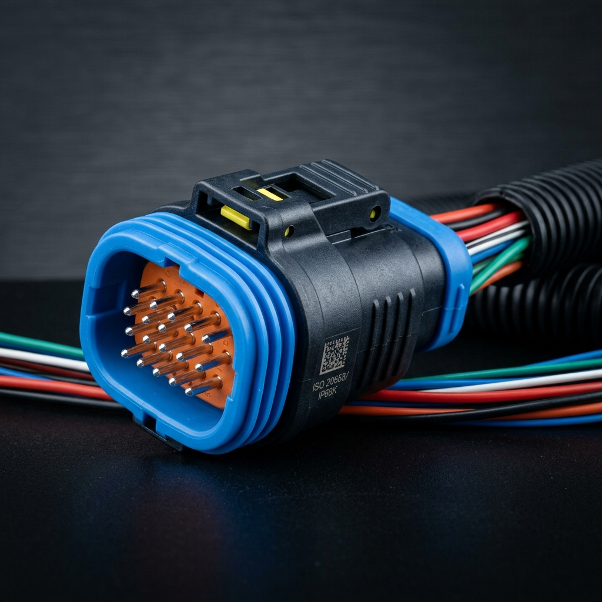

【面臨的技術挑戰】
汽車行駛的高頻震動易使傳統套裝的 O型環位移，導致漏水與短路。因此客戶決定採用 Overmolding 一體成型製程。挑戰在於 PA66 與矽膠結合面極小，且需在極高射出壓力下貼合不脫膠。
【鈞翔的技術解決方案】
使用高精度嵌入包膠定位模具以防漏膠溢料。挑選自粘性 LSR 液態矽膠射出成型材料，省去底漆塗佈。設計特殊膠道，確保高溫射出時熔融界面交聯，剪切強度大於 4.5 MPa。
【量產效益】
成功通過車廠 IP69K 最高等級防水檢測與汽車零組件大廠震動測試，省去人工套圈成本，封裝可靠度提升至 100%。

▲ LSR 液態矽膠嵌入包膠成型於硬質 PA66 汽車插座的防漏包膠成品
需要高品質的矽橡膠客製化服務嗎？
鈞翔實業擁有超過 30 年代工經驗，提供固態熱壓、LSR 液態射出成型以及多種異材結合工藝，符合 ISO 9001 國際認證。